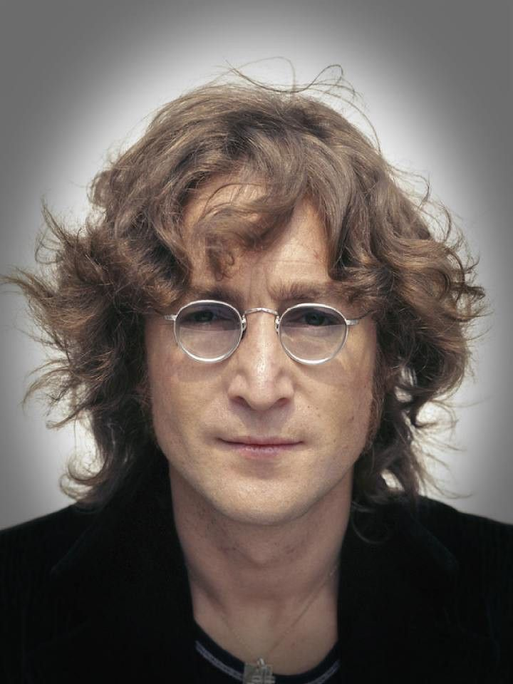
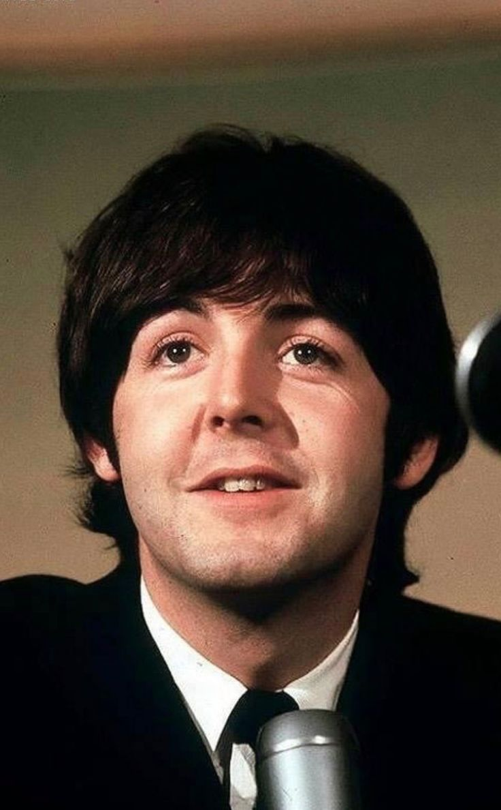
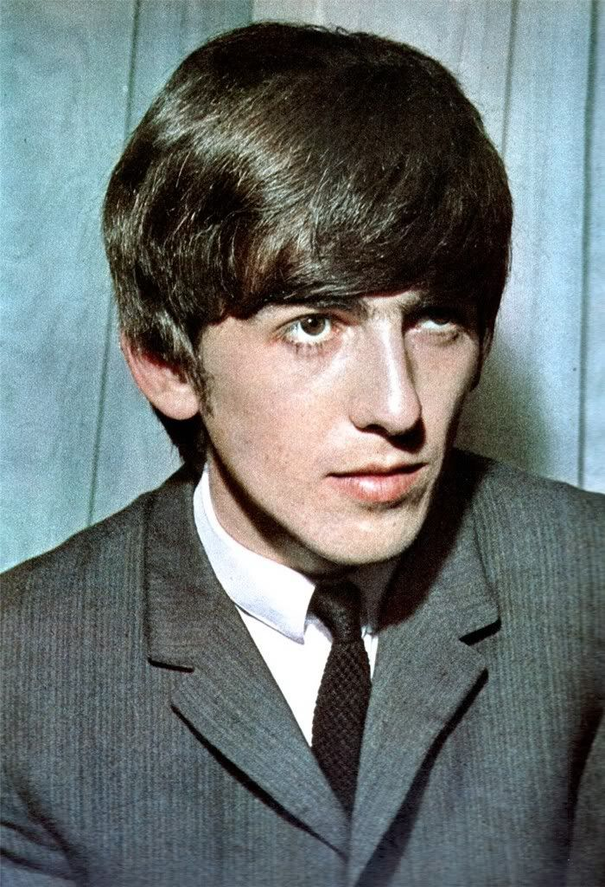
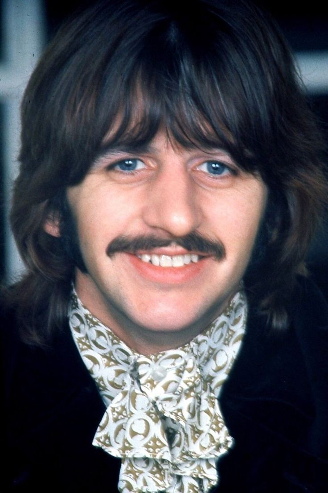

Главная |
Общая информация |
История |
Дискография |
Фильмография |
Источники |
Заказ альбома |
Контакты
Общая информация
Название:"The Beatles" ("Битлз"; отдельно участников ансамбля называют "Битлами")
Страна: Великобритания (г.Ливерпуль)
Годы: 1960-1970
Состав группы (те, кого весь мир знает как The Beatles):
- Джон Ленон (ритм-гитара, соло-гитара, клавишные, бубен, маракасы, бас-гитара, губная гормошка, вокал)

- Пол Макартни (бас-гитара, ритм-гитара, ситар, бубен, клавишные, вокал)

- Джордж Харрисон (соло-гитара, ритм-гитара, ситар, бубен, клавишные, вокал)

- Ринго Стар (ударные, ритм-гитара,бубен, маракасы, коубелл, бонги, клавишные, вокал)

Также в разное время в составе группы выступали:
- Пит Бест (ударные, вокал)
- Стюарт Станклифф (бас-гитара, вокал)
- Джимми Никол (ударные)
После распада группы, произошедшего в 1970 году, каждый из ёё участников начал сольную карьеру.
© Все права защищены.